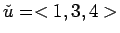
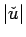
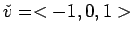
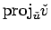
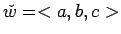
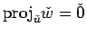
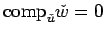
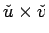
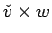
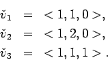

Before doing these problems, create clean new worksheet and put your name at the top. These problems require you to use the LinearAlgebra library. You can load in this library with the command:
[> with(LinearAlgebra);
Here are some problems to try.

$">. Use Maple to find
.

$">. Use Maple to find
.

$">. Use the solve command to find when
. Hint: It is enough to show that
.

and
.

, \\ \v v_2 & = & <1,2,0>, \\ \v v_3 & = & <1,1,1>. \end{eqnarray*}">